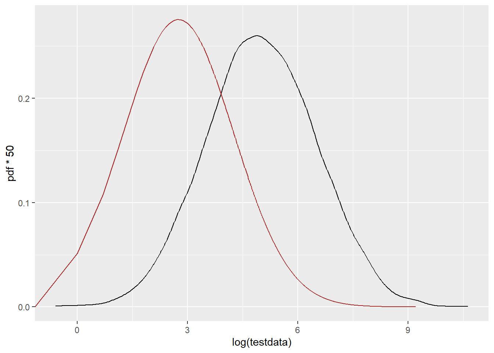
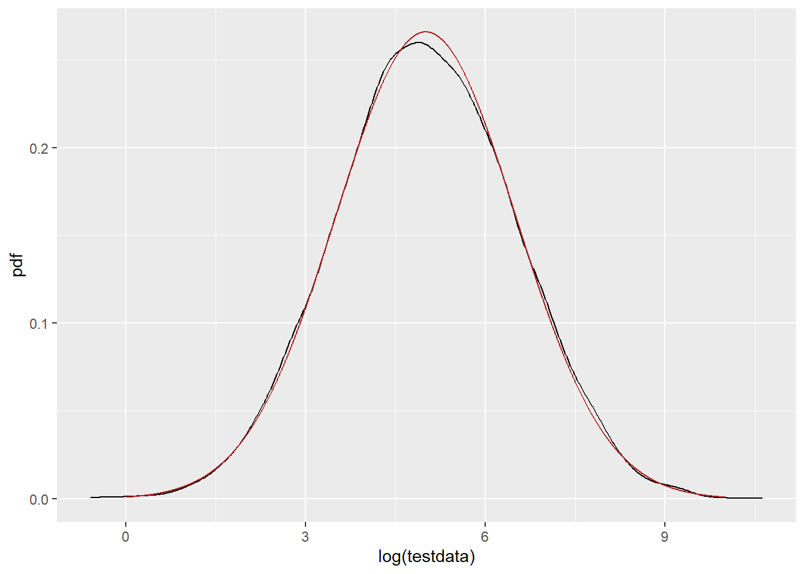
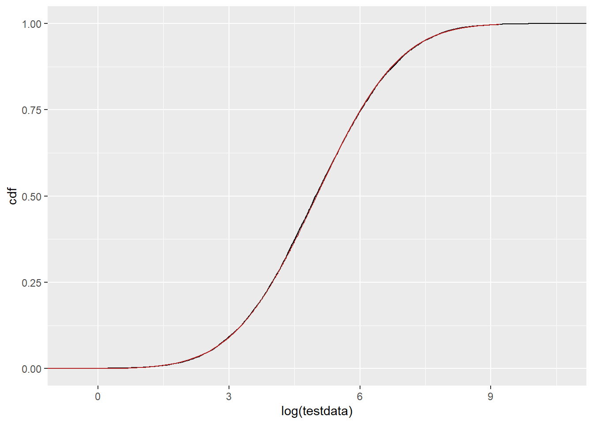
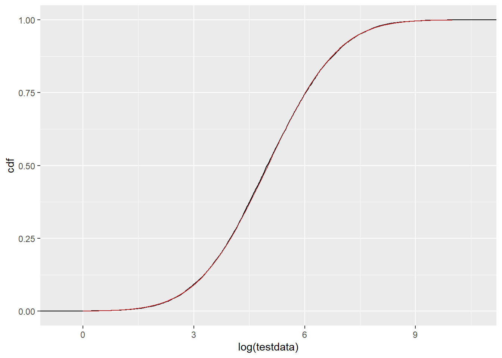
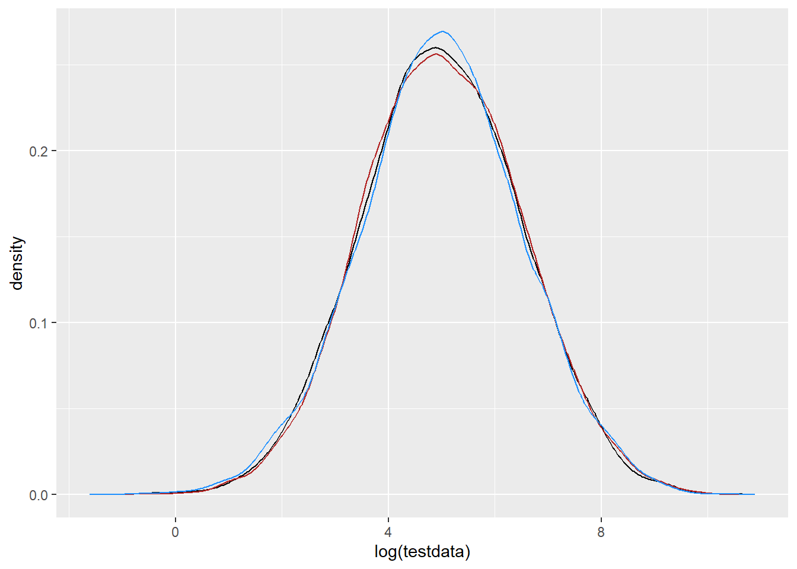

I need to fit some truncated lognormals, and want to work through how to do that with known distributions. Ignoring the truncated nature, I’m also getting weird outcomes where if I fit the data as lognormal, the distribution is way off, but when I manually log and then fit a normal, it’s fine.
First, pdf on the linear scale. Let’s zoom in, too. Use xlim instead of coord_cartesian or it doesn’t have enough points in the geom_density. That seems a bit shifted.
ggplot() +geom_density(data =tibble(testdata), aes(x = testdata), color ='black') +geom_line(data = df_log, aes(x = x, y = pdf), color ='firebrick') +xlim(c(-1, 1000))
PDF on the log scale (but this is still the fit done without pre-logging the data. This is dramatically shifted down. Same thing happened with my real data, so I’m trying to understand why. The mean should be at 4.97, and this clearly isn’t.
ggplot() +geom_density(data =tibble(testdata), aes(x =log(testdata)), color ='black') +geom_line(data = df_log, aes(x =log(x), y = pdf*50), color ='firebrick')

PDF of the pre-logged and fit as normal. That fits great. So, why is there a shift in the lognormal? They’re using the same functions and parameters.
ggplot() +geom_density(data =tibble(testdata), aes(x =log(testdata)), color ='black') +geom_line(data = df_n, aes(x = x, y = pdf), color ='firebrick')

Is the weirdness with the log possibly because of some strange discrepancy with the testdata vs evenly-spaced x? It shouldn’t be- it just gets P(x=X) at each x. But using testdata as x and getting the fit should remove that as an issue and focus just on the fit.
ggplot() +geom_density(data =tibble(testdata), aes(x =log(testdata)), color ='black') +geom_line(data = df_log2, aes(x =log(x), y = pdf*50), color ='firebrick')
Do we see this issue in the CDFs (plnorm)? or is it really just an issue with dlnorm? This doesn’t look obviously shifted down 2.
ggplot() +stat_ecdf(data =tibble(testdata), aes(x =log(testdata)), color ='black') +geom_line(data = df_log, aes(x =log(x), y = cdf), color ='firebrick')

Would we notice if it were shifted down? Build one on the normal scale where we know the parameters are working how we think. That is behaving how it should. SO. Why is dlnorm not producing the densities we expect? Especially when plnormdoes produce the CDFs we expect?
df_n2 <-tibble(x =seq(0,10, by =0.01), cdf =pnorm(x, 2.5, fit_n$estimate[2]),pdf =dnorm(x, 2.5, fit_n$estimate[2]))ggplot() +stat_ecdf(data =tibble(testdata), aes(x =log(testdata)), color ='black') +geom_line(data = df_log, aes(x =log(x), y = cdf), color ='firebrick') +geom_line(data = df_n2, aes(x = x, y = cdf), color ='dodgerblue')
What if we go back to the linear scale- would we see a shift there? e.g. is the issue in the translation from linear PDF to log, and I’m forgetting something about calculations around f(g(x))? Now, we use the df_log, but change the mean. This time I’ll shift UP to try to see if the resulting blue line gets closer than the red line. Nope. With that amount of shift, the fit is obviously different (and much worse). I had a bit of a play, and the closest I can get is with a mean of about 5.1, but this is only part of the distribution, so the values from the fit do seem to be getting the whole PDF as close as possible on this scale.
df_log2 <-tibble(x =0:10000, cdf =plnorm(x, 7.5, fit_log$estimate[2]),pdf =dlnorm(x, 7.5, fit_log$estimate[2]))ggplot() +geom_density(data =tibble(testdata), aes(x = testdata), color ='black') +geom_line(data = df_log, aes(x = x, y = pdf), color ='firebrick') +geom_line(data = df_log2, aes(x = x, y = pdf), color ='dodgerblue') +xlim(c(0, 1000))
The pre-logged and fit as normal works, as we expect.
ggplot() +stat_ecdf(data =tibble(testdata), aes(x =log(testdata)), color ='black') +geom_line(data = df_n, aes(x = x, y = cdf), color ='firebrick')

I think I’m being naive in my translation because I’m trying to get the PDF on a transformed variable, and so not accounting for nonlinear spacing. E.g. the f(g(x)) issue.
Random numbers
If I find random numbers from rlnorm or rnorm, do they match the distribution? In both directions.
On the log scale, r_norm and rlnormlog should match log(testdata)
ggplot() +geom_density(data =tibble(testdata), aes(x =log(testdata)), color ='black') +geom_density(data = df_rand, aes(x = r_norm), color ='firebrick') +geom_density(data = df_rand, aes(x = r_lnormlog), color ='dodgerblue')

That quite clearly works in both directions, further demonstrating that the naive logging of x for the PDF is just mathematically not appropriate. I should do the math to figure it out, but I need to move on now.